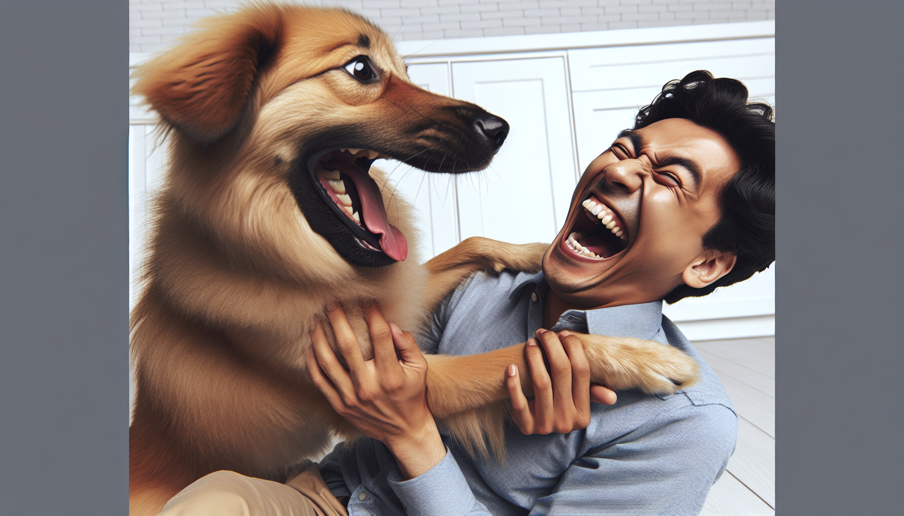

For those of us who are pet owners and dog lovers, we often find ourselves attributing human-like characteristics to our furry friends. Dogs, with their expressive eyes and playful antics, often become more than just pets; they are family. But what happens when our dogs and our human family members, particularly our brothers, become frenemies? Is your brother really evil, or is it all in good fun? Let’s explore this dynamic through the lens of pet ownership.
It’s not uncommon for dogs to develop a playful rivalry with certain family members. Often, brothers fall into this role, delighting in teasing and playing tricks on our canine companions. But is it truly evil, or just a special bond? In many cases, it's the latter. Brothers can be the perfect playmates, and their teasing is often a form of affection that strengthens the bond between man and dog.
Does your dog bark at your brother more than others, or perhaps hide their favorite toys when he’s around? These behaviors might suggest your dog perceives your brother as a bit of a villain—at least in a playful sense. Here are a few signs:
While these actions might seem like your dog is sounding an alarm, they’re often just part of the playful dynamics in your household.
Brothers are notorious for their pranks, whether it’s on their siblings or the family dog. From harmless tricks like hiding a toy or playing chase, these actions are usually not meant to be malicious. Instead, they foster a dynamic of mutual fun and understanding. The key is ensuring that the pranks remain harmless and enjoyable for your dog.
Encouraging positive interactions between your dog and your brother can turn perceived rivalry into a close bond. Here’s how you can help:
By fostering these interactions, you can help your dog see your brother as more of an ally.
A playful relationship between your dog and your brother offers numerous benefits. It can enrich your dog’s life with diverse social interactions and provide a healthy outlet for your brother’s playful energy. This dynamic can also strengthen your family’s bond, creating cherished memories and stronger relationships all around.
Whether your dog sees your brother as an evil villain or a playful partner in crime, celebrating your pet's unique personality is key. Personalized pet products can help capture these fun dynamics. At SnoutAndAbout, we specialize in creating custom items that reflect your pet's personality and the special relationships they have with family members.
In the end, whether your dog sees your brother as evil or just a playful menace, it's all about the joy they bring into our lives. These interactions are a testament to the special bond between humans and dogs, and the unique dynamics within families. So, next time your brother teases your pup, remember to enjoy the laughter and love it brings to your home.
Ready to celebrate your dog’s unique personality? Shop personalized pet products at SnoutAndAbout on Etsy.